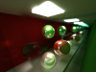
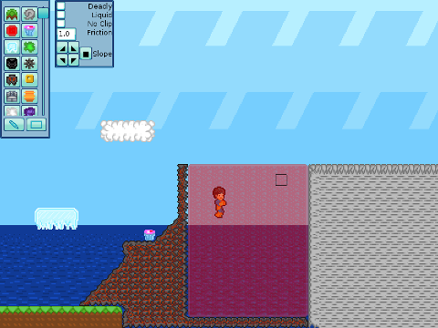

Kai Ninomiya
«software engineer, webgl –
Google Chrome»
«computer & information science '16 –
Penn»
«corresponding sysadmin –
STWing residential program»
& formerly...
«teaching assistant – CIS 565: GPU Programming»
«3d graphics engine developer – Cesium.js»
«teaching assistant – CIS 277: Interactive Computer Graphics»
«teaching assistant – CIS 460: Computer Graphics»
«co-instructor – CIS 191: Linux/Unix Skills»
«RCTA research intern – Center for Human Modeling & Simulation»
résumé (pdf)
bitbucket · github
about me
I work full-time on (implementing) web graphics APIs in Google Chrome. My work is open source and easily found online.
I'm big into computers and physics, especially computer graphics, physical approaches to graphics, computational approaches to physics, and sometimes programming languages. I love helping others learn, and learning with them. I like things like display tech, cameras, sensors, optics, color, and perception, too... but I don't know as much about them.
And hey, I think Rust is hecka cool! I co-taught a course in it once.
In my limited free time, I like to do things I think are great. (shockingly.) Here's some stuff I've done.
publications
Taylor, C.J., Cowley, A., Kettler, R., Ninomiya, K., Gupta, M., and Niu, B.. “Mapping with Depth Panoramas.” IEEE/RSJ International Conference on Intelligent Robots and Systems, Hamburg (Germany), 2015.
[preprint, 4.0 MB]
Ninomiya, K., Kapadia, M., Shoulson, A., Garcia, F., and Badler, N. “Planning Approaches to Constraint-Aware Navigation in Dynamic Environments.” Computer Animation and Virtual Worlds, 26: 119–139, 2015.
[preprint, 7.1 MB] [doi: 10.1002/cav.1622]
Kapadia, M., Ninomiya, K., Shoulson, A., Garcia, F., and Badler, N.I. “Constraint-Aware Navigation in Dynamic Environments.” ACM SIGGRAPH Conference on Motion in Games, Dublin (Ireland), 2013.
projects
all of this was done back when I was in school – most recent first, roughly
coursework + other
-
 [WebGL] Deferred shading rendererDeferred shading renderer (Oct. 2015, created from scratch, to prepare base code as an assignment for CIS 565 students)
[WebGL] Deferred shading rendererDeferred shading renderer (Oct. 2015, created from scratch, to prepare base code as an assignment for CIS 565 students) -
[Rust] A raytracer with primitive photon mappingRusttrace (mostly Summer 2014, pair)

-
 [Rust] A very small, basic path tracer a la smallptrspt (Fall 2015, solo)
[Rust] A very small, basic path tracer a la smallptrspt (Fall 2015, solo)
-
[WebCL] GPU Dynamic Fracture in the BrowserGPU Dynamic Fracture in the Browser (Dec. 2014, coursework, pair)
-

[CUDA] A GPU-accelerated path tracerGPU Path Tracer (Oct. 2014, coursework, solo)
-
 A smoke simulator/rendererCIS 563 Smoke Simulation (Mar. 2014, expanded coursework)
A smoke simulator/rendererCIS 563 Smoke Simulation (Mar. 2014, expanded coursework)
[videos: initial temperature source (13 MB), initial velocity source (14 MB)] -
 A modular volumetric rendererCIS 560 Volumetric Renderer (Oct. 2013, expanded coursework)
A modular volumetric rendererCIS 560 Volumetric Renderer (Oct. 2013, expanded coursework)


games
-
Invincible 3 – use time-bending powers to fight time-traveling invadersInvincible 3 (Mar. 2016, Penn Play Game Jam “Time”, team of 3)
Play now! Using Unity WebGL (Google Chrome recommended).
-
Invincible 2 – help the Capitalosaur escape Kola Superdeep BoreholeInvincible 2 (Mar. 2015, Penn Play Game Jam “Space”, team of 3)
Play now! Using Unity WebGL (Google Chrome recommended). -
 Invincible 1 – explore a puzzling cave by taking advantage of disposable laborInvincible (Mar. 2014, Penn Play Game Jam “Exploration”, team of 2)
Invincible 1 – explore a puzzling cave by taking advantage of disposable laborInvincible (Mar. 2014, Penn Play Game Jam “Exploration”, team of 2)
Play now! Using Unity WebGL (Google Chrome recommended).
-
Chickens – a networked platformer with live-editable world and custom UI toolkitChickens + the EGGS GL GUI System (Jan. 2011–Jan. 2014, group)

-
Witfell – a 4D, uh, "board game" (look, it's complicated)Witfell (May 2010–Jul. 2012, group)


(updated November 2017)